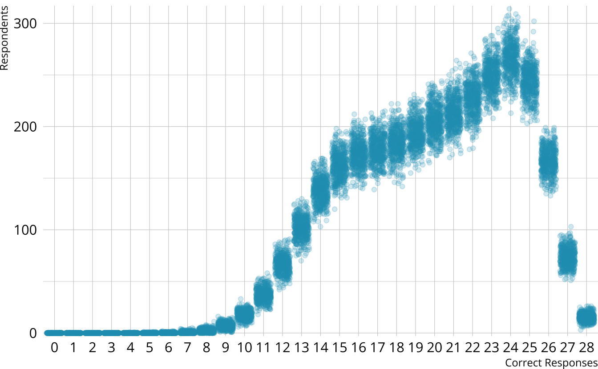
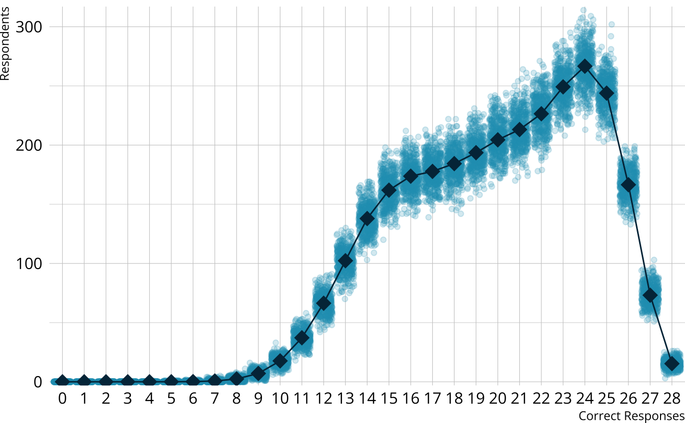
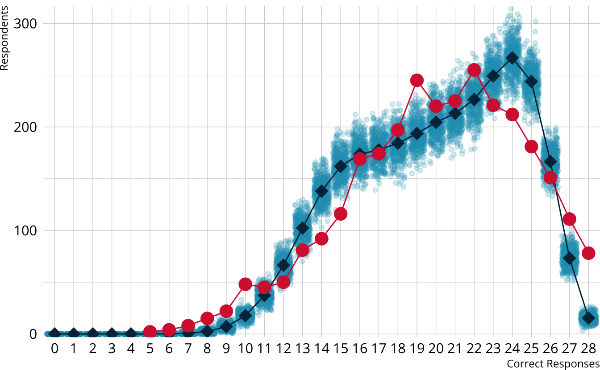
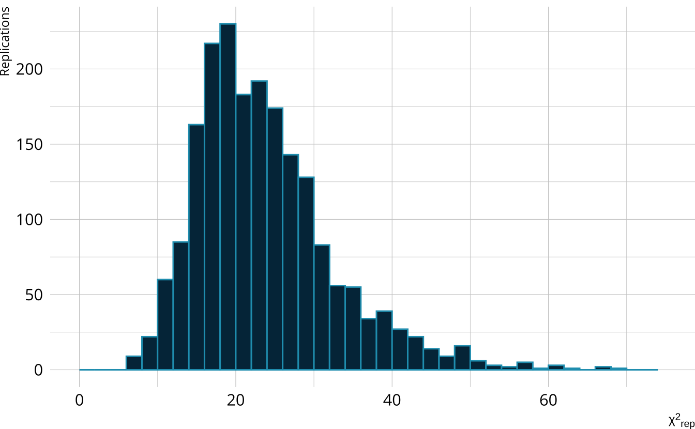
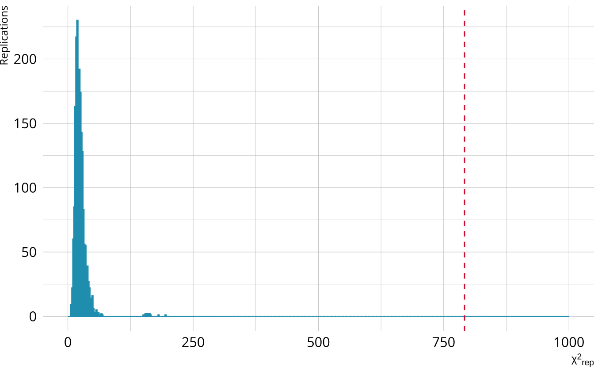
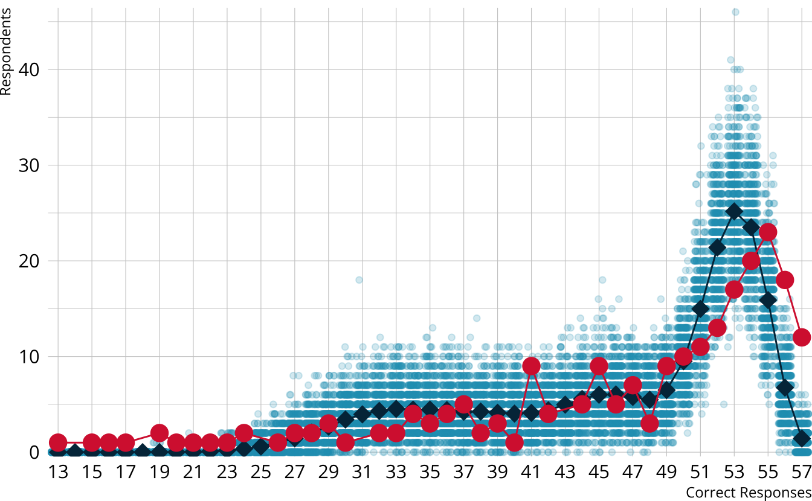

With Stan and measr
Absolute fit: How well does the model represent the observed data?
Relative fit: How do multiple models compare to each other?
Reliability: How consistent and accurate are the classifications?
Estimates model fit using univariate and bivariate item relationships
p-values less than .05 indicate poor fit
Open evaluation.Rmd and run the setup chunk.
Calculate the M2 statistic for the ROAR-PA LCDM model
Does the model fit the data?





Calculate the raw score PPMC for the ROAR-PA LCDM
Does the model fit the observed data?

Diagnose problems with model-level
Identify particular items that may not be performing as expected
Identify potential dimensionality issues
fit_ppmc(ecpe_lcdm, item_fit = "odds_ratio")
#> $ppmc_odds_ratio
#> # A tibble: 378 × 7
#> item_1 item_2 obs_or ppmc_mean `2.5%` `97.5%` ppp
#> <chr> <chr> <dbl> <dbl> <dbl> <dbl> <dbl>
#> 1 E1 E2 1.61 1.42 1.11 1.78 0.140
#> 2 E1 E3 1.42 1.56 1.27 1.86 0.810
#> 3 E1 E4 1.58 1.40 1.15 1.70 0.114
#> 4 E1 E5 1.68 1.47 1.10 1.89 0.159
#> 5 E1 E6 1.64 1.38 1.07 1.77 0.085
#> 6 E1 E7 1.99 1.89 1.55 2.30 0.286
#> 7 E1 E8 1.54 1.59 1.18 2.06 0.574
#> 8 E1 E9 1.18 1.32 1.08 1.60 0.871
#> 9 E1 E10 1.82 1.69 1.37 2.04 0.220
#> 10 E1 E11 1.61 1.73 1.40 2.08 0.736
#> # ℹ 368 more rowsmeasr_extract(ecpe_lcdm, "ppmc_pvalue")
#> # A tibble: 28 × 7
#> item_id obs_pvalue ppmc_mean `2.5%` `97.5%` samples ppp
#> <fct> <dbl> <dbl> <dbl> <dbl> <named list> <dbl>
#> 1 E1 0.803 0.810 0.786 0.827 <dbl [2,000]> 0.798
#> 2 E2 0.830 0.831 0.815 0.846 <dbl [2,000]> 0.554
#> 3 E3 0.579 0.553 0.531 0.591 <dbl [2,000]> 0.0885
#> 4 E4 0.706 0.697 0.680 0.716 <dbl [2,000]> 0.167
#> 5 E5 0.887 0.886 0.873 0.900 <dbl [2,000]> 0.419
#> 6 E6 0.854 0.854 0.839 0.868 <dbl [2,000]> 0.512
#> 7 E7 0.721 0.708 0.690 0.733 <dbl [2,000]> 0.118
#> 8 E8 0.898 0.900 0.888 0.912 <dbl [2,000]> 0.626
#> 9 E9 0.702 0.695 0.675 0.719 <dbl [2,000]> 0.239
#> 10 E10 0.658 0.670 0.640 0.690 <dbl [2,000]> 0.844
#> # ℹ 18 more rowsmeasr_extract(ecpe_lcdm, "ppmc_conditional_prob_flags")
#> # A tibble: 142 × 8
#> item_id class obs_cond_pval ppmc_mean `2.5%` `97.5%` samples ppp
#> <chr> <chr> <dbl> <dbl> <dbl> <dbl> <named list> <dbl>
#> 1 E1 [0,0,0] 0.701 0.695 0.672 0.699 <dbl [2,000]> 0.0055
#> 2 E1 [1,0,0] 0.664 0.822 0.795 0.827 <dbl [2,000]> 1
#> 3 E1 [0,0,1] 0.582 0.695 0.672 0.699 <dbl [2,000]> 1
#> 4 E1 [1,1,0] 1 0.941 0.930 0.942 <dbl [2,000]> 0
#> 5 E1 [1,0,1] 0.617 0.822 0.795 0.827 <dbl [2,000]> 1
#> 6 E1 [0,1,1] 0.854 0.813 0.791 0.819 <dbl [2,000]> 0
#> 7 E1 [1,1,1] 0.928 0.941 0.930 0.942 <dbl [2,000]> 0.98
#> 8 E2 [1,0,0] 0.803 0.741 0.730 0.744 <dbl [2,000]> 0
#> 9 E2 [0,0,1] 0.712 0.741 0.730 0.744 <dbl [2,000]> 0.991
#> 10 E2 [1,1,0] 1 0.908 0.907 0.913 <dbl [2,000]> 0
#> # ℹ 132 more rowsmeasr_extract(ecpe_lcdm, "ppmc_odds_ratio_flags")
#> # A tibble: 78 × 8
#> item_1 item_2 obs_or ppmc_mean `2.5%` `97.5%` samples ppp
#> <chr> <chr> <dbl> <dbl> <dbl> <dbl> <named list> <dbl>
#> 1 E1 E17 2.02 1.50 1.13 1.94 <dbl [2,000]> 0.0155
#> 2 E1 E26 1.61 1.29 1.05 1.57 <dbl [2,000]> 0.014
#> 3 E1 E28 1.86 1.43 1.13 1.77 <dbl [2,000]> 0.0075
#> 4 E2 E4 1.73 1.35 1.09 1.65 <dbl [2,000]> 0.0055
#> 5 E2 E5 1.84 1.40 1.03 1.83 <dbl [2,000]> 0.024
#> 6 E2 E6 1.72 1.33 1.00 1.72 <dbl [2,000]> 0.024
#> 7 E2 E14 1.64 1.24 1.01 1.51 <dbl [2,000]> 0.002
#> 8 E2 E15 1.92 1.45 1.07 1.90 <dbl [2,000]> 0.02
#> 9 E4 E5 2.81 2.06 1.63 2.58 <dbl [2,000]> 0.0065
#> 10 E4 E8 2.14 1.48 1.13 1.90 <dbl [2,000]> 0.0005
#> # ℹ 68 more rowsmeasr_extract(ecpe_lcdm, "ppmc_conditional_prob_flags") |>
count(class, name = "flags") |>
left_join(measr_extract(ecpe_lcdm, "strc_param"), by = join_by(class)) |>
arrange(desc(flags))
#> # A tibble: 7 × 6
#> class flags morphosyntactic cohesive lexical estimate
#> <chr> <int> <int> <int> <int> <rvar[1d]>
#> 1 [1,0,1] 27 1 0 1 0.020 ± 0.00097
#> 2 [1,0,0] 26 1 0 0 0.018 ± 0.00198
#> 3 [0,0,1] 25 0 0 1 0.133 ± 0.00517
#> 4 [1,1,0] 23 1 1 0 0.015 ± 0.00253
#> 5 [0,1,1] 21 0 1 1 0.154 ± 0.00909
#> 6 [0,0,0] 12 0 0 0 0.291 ± 0.00588
#> 7 [1,1,1] 8 1 1 1 0.350 ± 0.00487Calculate PPMCs for the conditional probabilities and odds ratios for the ROAR-PA model
What do the results tell us about the model?
measr_extract(roarpa_lcdm, "ppmc_conditional_prob_flags") |>
count(class, name = "flags") |>
left_join(measr_extract(roarpa_lcdm, "strc_param"), by = join_by(class)) |>
arrange(desc(flags))
#> # A tibble: 8 × 6
#> class flags lsm del fsm estimate
#> <chr> <int> <int> <int> <int> <rvar[1d]>
#> 1 [1,0,0] 54 1 0 0 0.011 ± 0.0083
#> 2 [1,0,1] 42 1 0 1 0.042 ± 0.0162
#> 3 [1,1,0] 39 1 1 0 0.037 ± 0.0151
#> 4 [0,0,1] 38 0 0 1 0.059 ± 0.0198
#> 5 [0,1,0] 31 0 1 0 0.047 ± 0.0169
#> 6 [0,1,1] 24 0 1 1 0.099 ± 0.0228
#> 7 [0,0,0] 11 0 0 0 0.158 ± 0.0269
#> 8 [1,1,1] 2 1 1 1 0.546 ± 0.0400measr_extract(roarpa_lcdm, "ppmc_odds_ratio_flags")
#> # A tibble: 164 × 8
#> item_1 item_2 obs_or ppmc_mean `2.5%` `97.5%` samples ppp
#> <chr> <chr> <dbl> <dbl> <dbl> <dbl> <named list> <dbl>
#> 1 fsm_01 lsm_07 7.20 2.84 0.956 6.59 <dbl [2,000]> 0.016
#> 2 fsm_01 lsm_08 5.84 2.47 0.839 5.72 <dbl [2,000]> 0.023
#> 3 fsm_01 lsm_19 0.349 2.44 0.378 6.30 <dbl [2,000]> 0.978
#> 4 fsm_01 del_09 12.3 3.21 0.731 8.22 <dbl [2,000]> 0.003
#> 5 fsm_01 del_15 7.81 2.57 0.520 6.49 <dbl [2,000]> 0.0115
#> 6 fsm_04 fsm_11 13.6 4.38 0 13.1 <dbl [2,000]> 0.019
#> 7 fsm_04 del_01 11 2.31 0 8.20 <dbl [2,000]> 0.012
#> 8 fsm_04 del_07 7.75 Inf 0 6.44 <dbl [2,000]> 0.0105
#> 9 fsm_04 del_09 14.0 Inf 0 8.99 <dbl [2,000]> 0.0045
#> 10 fsm_04 del_16 5.08 1.80 0 5.00 <dbl [2,000]> 0.0235
#> # ℹ 154 more rowsloo(ecpe_lcdm)
#>
#> Computed from 2000 by 2922 log-likelihood matrix.
#>
#> Estimate SE
#> elpd_loo -42794.9 226.8
#> p_loo 23.4 0.4
#> looic 85589.7 453.7
#> ------
#> MCSE of elpd_loo is NA.
#> MCSE and ESS estimates assume independent draws (r_eff=1).
#>
#> Pareto k diagnostic values:
#> Count Pct. Min. ESS
#> (-Inf, 0.7] (good) 749 25.6% 1897
#> (0.7, 1] (bad) 13 0.4% <NA>
#> (1, Inf) (very bad) 2160 73.9% <NA>
#> See help('pareto-k-diagnostic') for details.
waic(ecpe_lcdm)
#>
#> Computed from 2000 by 2922 log-likelihood matrix.
#>
#> Estimate SE
#> elpd_waic -42794.8 226.8
#> p_waic 23.3 0.4
#> waic 85589.5 453.7First, we need another model to compare
ecpe_dina_spec <- dcm_specify(
qmatrix = ecpe_qmatrix,
identifier = "item_id",
measurement_model = dina(),
structural_model = unconstrained()
)
ecpe_dina <- dcm_estimate(
ecpe_dina_spec,
data = ecpe_data,
identifier = "resp_id",
method = "pathfinder",
backend = "cmdstanr",
single_path_draws = 1000,
num_paths = 10,
draws = 2000,
file = here("materials", "slides", "fits", "ecpe-dina-uncst")
)loo_compare()Estimate a DINA model for the ROAR-PA data
Use loo_compare() to compare the LCDM and DINA models
roarpa_dina_spec <- dcm_specify(
qmatrix = roarpa_qmatrix,
identifier = "item",
measurement_model = dina(),
structural_model = unconstrained()
)
roarpa_dina <- dcm_estimate(
roarpa_dina_spec,
data = roarpa_data,
identifier = "id",
method = "variational",
backend = "rstan",
seed = 19891213,
file = here("materials", "slides", "fits", "roarpa-dina-uncst")
)Reporting reliability depends on how results are estimated and reported
Reliability for:
reliability(ecpe_lcdm)
#> $pattern_reliability
#> p_a p_c
#> 0.7357164 0.6525172
#>
#> $map_reliability
#> $map_reliability$accuracy
#> # A tibble: 3 × 8
#> attribute acc lambda_a kappa_a youden_a tetra_a tp_a tn_a
#> <chr> <dbl> <dbl> <dbl> <dbl> <dbl> <dbl> <dbl>
#> 1 morphosyntactic 0.896 0.734 0.789 0.780 0.943 0.864 0.916
#> 2 cohesive 0.851 0.678 0.700 0.699 0.891 0.870 0.829
#> 3 lexical 0.916 0.752 0.603 0.805 0.959 0.945 0.859
#>
#> $map_reliability$consistency
#> # A tibble: 3 × 10
#> attribute consist lambda_c kappa_c youden_c tetra_c tp_c tn_c gammak
#> <chr> <dbl> <dbl> <dbl> <dbl> <dbl> <dbl> <dbl> <dbl>
#> 1 morphosyntactic 0.818 0.534 0.710 0.618 0.828 0.767 0.850 0.852
#> 2 cohesive 0.800 0.560 0.688 0.597 0.807 0.817 0.780 0.788
#> 3 lexical 0.864 0.583 0.635 0.690 0.890 0.899 0.791 0.880
#> # ℹ 1 more variable: pc_prime <dbl>
#>
#>
#> $eap_reliability
#> # A tibble: 3 × 5
#> attribute rho_pf rho_bs rho_i rho_tb
#> <chr> <dbl> <dbl> <dbl> <dbl>
#> 1 morphosyntactic 0.706 0.689 0.577 0.885
#> 2 cohesive 0.707 0.574 0.506 0.785
#> 3 lexical 0.776 0.731 0.588 0.916measr_extract(ecpe_lcdm, "class_prob")
#> # A tibble: 2,922 × 9
#> resp_id `[0,0,0]` `[1,0,0]` `[0,1,0]` `[0,0,1]` `[1,1,0]` `[1,0,1]` `[0,1,1]`
#> <chr> <dbl> <dbl> <dbl> <dbl> <dbl> <dbl> <dbl>
#> 1 1 5.21e-6 1.27e-4 4.15e-7 0.00127 0.000118 0.0472 0.00171
#> 2 2 5.10e-6 1.25e-4 2.20e-7 0.00352 0.0000636 0.130 0.00156
#> 3 3 5.59e-6 1.87e-5 2.23e-6 0.00315 0.0000902 0.00959 0.0211
#> 4 4 2.02e-7 4.94e-6 8.07e-8 0.000264 0.0000230 0.00981 0.00178
#> 5 5 6.73e-4 9.61e-3 2.69e-4 0.00112 0.0450 0.00920 0.00752
#> 6 6 1.93e-6 1.70e-5 7.70e-7 0.000840 0.0000795 0.00977 0.00566
#> 7 7 1.93e-6 1.70e-5 7.70e-7 0.000840 0.0000795 0.00977 0.00566
#> 8 8 2.62e-2 7.33e-5 1.09e-3 0.571 0.0000203 0.000295 0.400
#> 9 9 4.77e-5 3.05e-4 1.91e-5 0.00606 0.00147 0.00935 0.0408
#> 10 10 2.60e-1 5.98e-1 2.02e-3 0.0331 0.0556 0.0161 0.00432
#> # ℹ 2,912 more rows
#> # ℹ 1 more variable: `[1,1,1]` <dbl>measr_extract(ecpe_lcdm, "class_prob") |>
pivot_longer(-resp_id, names_to = "profile", values_to = "prob") |>
slice_max(order_by = prob, by = resp_id)
#> # A tibble: 2,922 × 3
#> resp_id profile prob
#> <chr> <chr> <dbl>
#> 1 1 [1,1,1] 0.950
#> 2 2 [1,1,1] 0.864
#> 3 3 [1,1,1] 0.966
#> 4 4 [1,1,1] 0.988
#> 5 5 [1,1,1] 0.927
#> 6 6 [1,1,1] 0.984
#> 7 7 [1,1,1] 0.984
#> 8 8 [0,0,1] 0.571
#> 9 9 [1,1,1] 0.942
#> 10 10 [1,0,0] 0.598
#> # ℹ 2,912 more rowsmeasr_extract(ecpe_lcdm, "attribute_prob")
#> # A tibble: 2,922 × 4
#> resp_id morphosyntactic cohesive lexical
#> <chr> <dbl> <dbl> <dbl>
#> 1 1 0.997 0.951 1.000
#> 2 2 0.995 0.866 1.000
#> 3 3 0.976 0.987 1.000
#> 4 4 0.998 0.990 1.000
#> 5 5 0.990 0.979 0.944
#> 6 6 0.993 0.989 1.000
#> 7 7 0.993 0.989 1.000
#> 8 8 0.00208 0.403 0.973
#> 9 9 0.953 0.984 0.998
#> 10 10 0.701 0.0932 0.0847
#> # ℹ 2,912 more rowsmeasr_extract(ecpe_lcdm, "attribute_prob") |>
mutate(across(where(is.double), \(x) as.integer(x > 0.5)))
#> # A tibble: 2,922 × 4
#> resp_id morphosyntactic cohesive lexical
#> <chr> <int> <int> <int>
#> 1 1 1 1 1
#> 2 2 1 1 1
#> 3 3 1 1 1
#> 4 4 1 1 1
#> 5 5 1 1 1
#> 6 6 1 1 1
#> 7 7 1 1 1
#> 8 8 0 0 1
#> 9 9 1 1 1
#> 10 10 1 0 0
#> # ℹ 2,912 more rowsmeasr_extract(ecpe_lcdm, "attribute_prob")
#> # A tibble: 2,922 × 4
#> resp_id morphosyntactic cohesive lexical
#> <chr> <dbl> <dbl> <dbl>
#> 1 1 0.997 0.951 1.000
#> 2 2 0.995 0.866 1.000
#> 3 3 0.976 0.987 1.000
#> 4 4 0.998 0.990 1.000
#> 5 5 0.990 0.979 0.944
#> 6 6 0.993 0.989 1.000
#> 7 7 0.993 0.989 1.000
#> 8 8 0.00208 0.403 0.973
#> 9 9 0.953 0.984 0.998
#> 10 10 0.701 0.0932 0.0847
#> # ℹ 2,912 more rowsExamine the attribute classification indices for the ROAR-PA LCDM.
Which attributes are the most and least reliable?
Evaluating diagnostic classification models
With Stan and measr